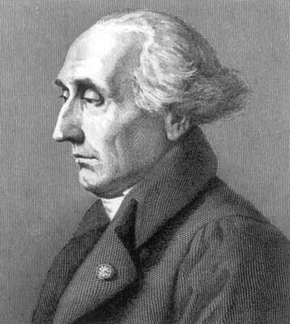
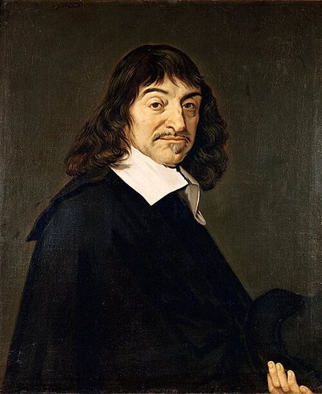
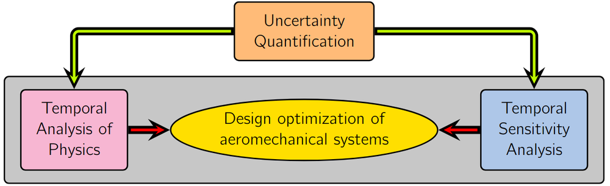

Philosophy
Eulerian minimization of Lagrangian scalars
My ambition is to develop scalable and robust computational infrastructure through foundational research spanning across physics, mathematics and computing for applications at the intersection of Multidisciplinary Optimization Under Uncertainty (MDOUU) and Artificial Intelligence (AI).
In contemporary scientific understanding, both MDOUU and AI are broad and distinctive disciplinary areas, but they share a common philosophical trait, and that is what excites me more than anything. They are both optimization statements that minimize an Objective subject to some Constraints.
…nothing at all takes place in the universe in which some rule of maximum or minimum does not appear.Leonhard Euler, 1744
I recognize both as instances of the Eulerian school of thought, which Leonhard Euler stated in 1744 in the words quoted above. Therefore, one computational infrastructure should be able to support both MDOUU and AI (if one places one’s trust in Euler’s intuition). From my standpoint, MDOUU and AI are actually Optimization Under Uncertainty (OUU) statements involving the Expectation and Variance of metrics (e.g., minimize an expected loss and its variance, not mere loss!).
I see Genichi Taguchi’s robust design as an engineering-centric application of this Eulerian school of thought, which my work on optimization under uncertainty, described below, puts into practice for aerospace systems.
What is that one object that combines an objective and constraints and is itself subject to conditions of stationarity for a purpose? It is the Lagrangian (due to J. L. Lagrange for his work on Analytical Mechanics). He brilliantly engineered a scalar whose derivatives, when equated to zero, yielded the physics. I understand, recognize, formalize and extend the Lagrangian school of thought to hypothesize that, in addition to physics, sensitivity analysis and design optimizations are derivable from stationarities of Lagrangians, as are the innermost linear solvers, which are essentially minimum-residual (MINRES) operations.
In short, my philosophy is in the same spirit as Euler-Lagrange equations: derive everything based on Lagrangians, so that the computational infrastructure is merely hierarchical Minimization of Residuals (mathematically) or Stationarity of Lagrangians (physically).
Yet another of Euler’s masterpieces is Graph Theory. I have no doubt that the conceived computational infrastructure will look visually like a Network of Graphs (in abstraction) or like a Network of Lagrangians that are tuned (in concretion). The evidence is also in plain sight: Neural Networks that form the foundation of AI are nothing but a Network of Graphs!
1707 – 1783
Portrait by J. E. Handmann, 1753

1736 – 1813
Engraving, artist unknown
Optimization under uncertainty
Robust and reliable designs, in three parts
In the summary of my research that follows, I emphasize the technical aspects and the underlying philosophy alike. For focused technical discussions, see the papers on the Publications page.
A product should be designed in such a way that makes its performance insensitive to variation in variables beyond the control of the designer.
The primary motivation is to produce robust and reliable aerospace designs aligned with Genichi Taguchi’s view. The application of optimization under uncertainty (OUU) methods, in the context of aerospace design-optimization, provides a systematic way to achieve the desired stochastic response characteristics in aerospace vehicles. My focus is on the development of stochastic simulation infrastructure to provide the key ingredients needed for OUU, namely:
- 1Physics
access to high-fidelity deterministic and stochastic physics simulations to analyze the effect of design changes on the underlying laws of physical equilibrium
- 2Uncertainty analysis
access to mean, variance, and standard deviation of the spatio-temporal quantities and their corresponding design variable gradients through the application of the adjoint method
- 3Sensitivity analysis
access to design variable gradients of the quantities of interest that feed into optimization frameworks to calculate further design improvements
The elements of this infrastructure are connected to Deterministic Optimization (DO) and Optimization Under Uncertainty (OUU) algorithms as needed for aerospace applications. The three parts below take the analyses in the order of my research: uncertainty propagation first, then sensitivity analysis, then the physics.
Part I
Uncertainty propagation methods through PDE models
I explore the application of probabilistic extensions to deterministic frameworks for synthesizing new methods of uncertainty propagation through PDEs. In this context, I recognize freedom in the sequence of application of spatial, temporal and probabilistic domain principles. I adopt the philosophy of structuring stochastic calculations around deterministic calculations – a choice that aids in natural, modular extensions that reuse capabilities implemented in deterministic space-time (DST) when computations are carried out in probabilistic space-time (PST).
One of the key outcomes of my research in this context is the development of the Semi-Intrusive Stochastic Galerkin Projection Method, which is a simplified, sampling-based (samplified) version of the Stochastic Galerkin method. This method draws from:
- the flexibility in the order of discretization and integration across the probabilistic space-time (PST) domain.
- the mathematical construction that connects sampling and projection through stochastic inner products, exploiting their invariance to the method of evaluation, whether analytical, numerical, or experimental.
Apart from the technical contribution, it is deeply satisfying from a philosophical perspective to witness the harmonious functioning of seemingly disparate concepts—sampling and projection. A long-standing challenge, which has slowed the Galerkin projection’s advancement for roughly two decades, is resolved through an integrated application of these principles.
The potential to extend this synthesis to other configurations drives my ongoing research within OUU. My philosophy here is to implement methods such that projection lends the basis for sampling and sampling lends the means for projection, forming a mutually beneficial arrangement.
As long as algebra and geometry have been separated, their progress has been slow and their uses limited; but when these two sciences have been united, they have lent each other mutual forces and marched together towards perfection.
- code touched
- what is solved
- derivatives of the statistics
Part II
Computational sensitivity analysis methods
My research in this subspace is along two trajectories: (i) to obtain derivatives necessary to solve large scale optimization problems from aerospace vehicle design, and (ii) explorations into the integration of sensitivity analysis within the context of linear/non-linear solution algorithms.
The adjoint method for design variable derivatives
My special interest is in adjoint-based methods for sensitivity analysis, whose cost does not grow with the number of design variables. I have focused on formulating and implementing sensitivity analysis methods in the time-domain with several order-agnostic multi-step and multi-stage time methods in deterministic-space-time (DST). This study uncovers the broader structure of the discrete-adjoint equations:
Although the schemes come with various forms, the overarching structure that is common to all schemes is that the partial derivatives of the residuals and functions can be combined using different weights to implement the discrete adjoint methods.
The adjoint method in artificial intelligence
The adjoint method, traditionally used in optimization and sensitivity analysis, provides a framework for efficiently computing the derivatives of output quantities of interest with respect to input variables.
This method has deep connections with modern AI techniques, particularly in machine learning. AI models, especially neural networks, can be viewed as an implementation of the adjoint method, where the back-propagation algorithm is used to compute gradients in a manner analogous to adjoint sensitivity analysis.
In both contexts, the efficient computation of these gradients enables large-scale optimization across complex systems, bridging analytical methods with modern computational intelligence.
Higher-dimensional numbers based on algebraic structures and differential operators
I study the construction of higher-dimensional numbers that can provide first, second, and other higher-order derivatives, when needed. This research is building upon the observations from complex-number arithmetic to four- and eight-dimensional numbers.
… the idea of enlarging reality by including “tentative” possibilities and then selecting one of these by the condition that it minimizes a certain quantity, seems to bring purpose to the flow of natural events.
Part III
Computational methods for high-fidelity spatio-temporal physics
The goal is to mathematically model physical phenomena of interest and computationally analyze the phenomena for the different input space-time geometries from aerospace engineering vehicle design contexts.

The flexible multibody dynamics simulation of rotorcraft hub assembly using the finite-element integration in spatial-domain, and the diagonally implicit Runge–Kutta integration in time-domain.
Mathematical physics
Often the mathematical models of physics are heavily reliant on the assembly of forces from various sources by following the philosophy of Newton.
This philosophy works well for problems that are isolated or primarily governed by a single set of principles, like mechanics or electromagnetism in simpler contexts. This will not be readily applicable in situations where there is an inherent scope for lack of intuition such as multidisciplinary and multi-physics application contexts. The Newtonian approach might oversimplify or ignore the interconnectedness and emergent behaviors that are not easily explained by the sum of forces alone. Philosophically, this calls into question whether physical phenomena are best understood as discrete forces or if a more holistic framework – where different disciplines and forces are interconnected in a way that the Newtonian paradigm does not capture – might be more suitable.
Intrigued by this philosophical question, I study methods to standardize the process of obtaining governing equations of physical systems based on the prediction capabilities of mathematics, focusing first on the mechanics of fluids and solids. This way, even if the physical intuition is not available immediately, the mathematical logic would provide the accurate set of governing equations necessary for simulations with varying measures of fidelity. I have used elements of this philosophy in my research work on the stochastic extensions of deterministic physics and adjoint derivatives, and demonstrated considerable success in this regard. I am excited to push this philosophy into the broader space of mathematical physics, and apply the technical advances back in the context of aerospace design.
Computational mathematics
I adopt abstracted mathematical models with generic forms and wire their state and design variable derivatives to implement the numerical solution framework.
For implementation of the solution framework, the residuals and their state derivatives (Jacobian) are wired into linear and nonlinear solution methods.
For adjoint implementation, the abstracted functions, and their state and design variable derivatives are sufficient to implement an adjoint gradient assembly framework.
I take a physics-agnostic perspective to keep the implementation abstracted from the physics, and thus the framework can be configured in different ways for the particular problem setup. This holds in a logical sense because the physical interpretation of what the states are in reality does not matter to computational mathematics frameworks.

The father of analytical geometry, for uniting algebra and geometry, so that algebraic equations describe geometric shapes.
